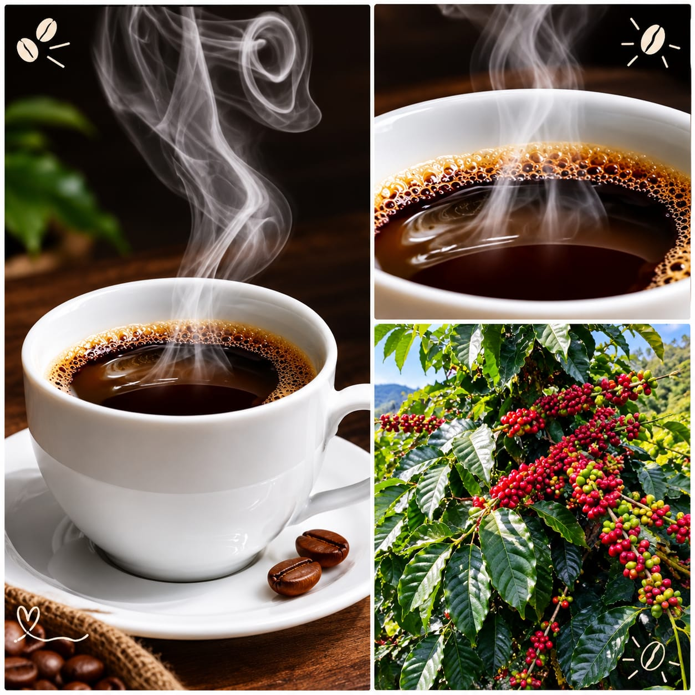
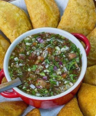
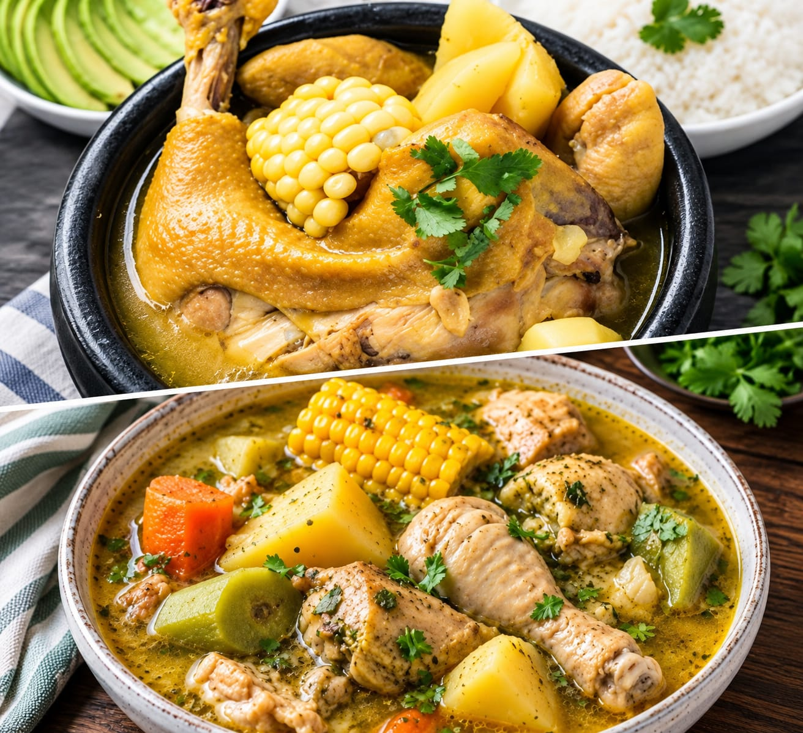
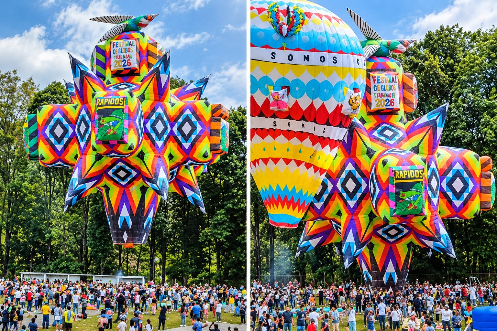
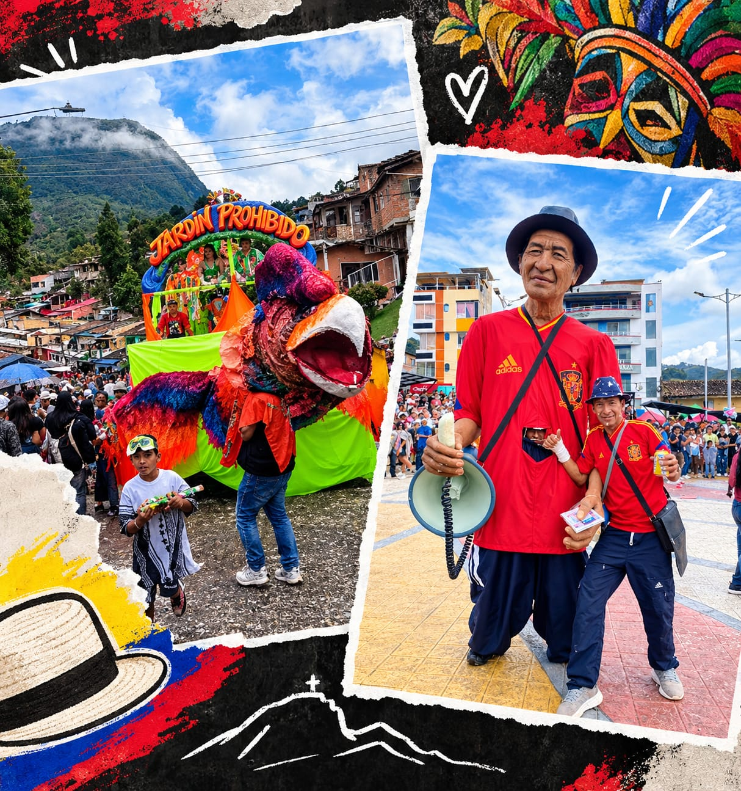
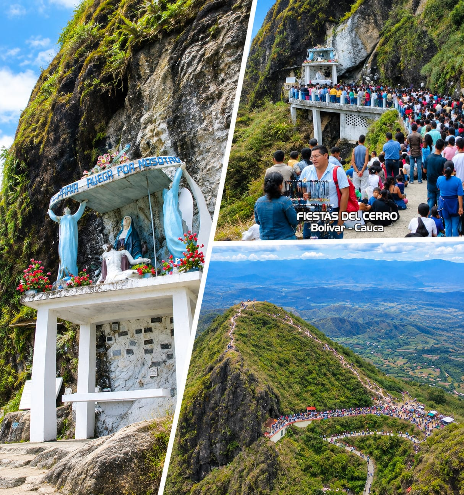

Inicio
Bolívar queda al sur del Cauca, a 1730 msnm, en el Macizo Colombiano.
Gastronomía
Comidas típicas de Bolívar: café, empanadas de pipián y sancocho.

Café del Macizo
Café de San Juan y El Rodeo.

Empanadas de Pipián
Con maní y ají.

Sancocho
Sancocho en leña y envueltos.
Turismo

Carnaval de Globos
En enero, desde 1908. Récord de 3680 globos.

Carrozas y Taitapuros
Carrozas alegóricas y muñecos de 4 metros.

Fiesta del Cerro - Virgen de las Misericordias
Patrona de Bolívar. Fiestas patronales el último domingo de agosto en el Cerro de Bolívar. Suben cientos de personas al monumento.
Café del Macizo
Veredas San Juan y El Rodeo, a 1730 msnm. Clima frío, tierra volcánica, sabor a panela y chocolate. Cultivo familiar, secado al sol 15 días.
Receta Empanadas de Pipián
Ingredientes: papa amarilla, maní, huevo, masa maíz, hogao, ají.
1. Cocinar papa y hacer puré
2. Mezclar con maní y huevo
3. Hacer guiso
4. Armar y freír
Receta Sancocho
Ingredientes: gallina criolla, yuca, plátano, papa, envueltos.
1. Cocinar gallina en leña 2 horas
2. Agregar yuca y plátano
3. Hacer envueltos
4. Servir con ají